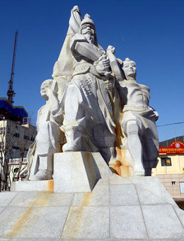

향토수호(충신)
-

송상현 1551~1592

임진왜란 때 동래읍성에 전투에서 순절한 문신.
임진왜란 8개월 전인 1591년 8월 동래부사로 임명됨.
임진왜란 당시 동래읍성에서 왜군의 공격에 끝까지 항전하다가 순절함. -
노개방 1563 ~1592

임진왜란 때 동래 읍성에서 순절한 문신.
1588년 과거 급제 후 동래부 교수 근무함.
임진왜란 당시 동래읍성에서 왜군의 공격에 끝까지 항전하다가 순절함. -

조영규 1535~1592

임진왜란 때 동래읍성에 전투에서 순절한 문신.
1592년 양산군수로 있을 때 왜군이 부산을 진격한다는 소식을 듣고 곧장 달려가 동래부사 송상현과 동래읍성에서 항전하다가 순절함. -
정발 1553~1592

임진왜란 때 부산진성 전투에서 순절한 무신.
1577년 무과에 급제하였고, 1592년 부산진성의 사령관격인 부산진첨절제사로 임명됨.
왜군이 부산진성을 공격하자 군,관,민을 독려하여 끝까지 싸우다가 순절함. -

윤흥신 ?~1592
임진왜란 때 다대진성 전투에서 순절한 문신.
1592년 다대진 첨절제사에 임명됨.
왜군이 부산진성 함락 후 다대진성을 공격하자, 동생 윤흥제와 함께 싸우다 순절함.
향토수호(충신)
송상현
1551년~1592년
임진왜란 때 동래읍성 전투에서 순절한 문신.
임진왜란 8개월 전인 1591년 8월 동래부사로 임명됨.
임진왜란 당시 동래읍성에서 왜군의 공격에 끝까지 항전하다가 순절함.
노개방
1563~1692
임진왜란 때 동래 읍성에서 순절한 문신.
1588년 과거 급제 후 동래부 교수 근무함.
임진왜란 당시 동래읍성에서 왜군의 공격에 끝까지 항전하다가 순절함.
조영규
1535~1592
임진왜란 때 동래읍성에 전투에서 순절한 문신.
1592년 양산군수로 있을 때 왜군이 부산을 진격한다는 소식을 듣고 곧장 달려가 동래부사 송상현과 동래읍성에서 항전하다가 순절함.
정발
1553~1592
임진왜란 때 부산진성 전투에서 순절한 무신.
1577년 무과에 급제하였고, 1592년 부산진성의 사령관격인 부산진첨절제사로 임명됨.
왜군이 부산진성을 공격하자 군,관,민을 독려하여 끝까지 싸우다가 순절함.
윤흥신
?~1592
임진왜란 때 다대진성 전투에서 순절한 문신.
1592년 다대진 첨절제사에 임명됨.
왜군이 부산진성 함락 후 다대진성을 공격하자, 동생 윤흥제와 함께 싸우다 순절함.
임란 동래 24공신
?~임란이후
임진왜란 때 전국에서 왜군과 싸우다가 전사한 동래부민 24명.
임진왜란 때 동래읍성이 함락된 후 동래부민들은 고향을 떠나 전국 각지에서 봉기하고 있던 의병에 참가하여 항전함.
수영 25의 용
?~임란이후
임진왜란 때 죄수영성에서 왜군에 저항한 25인.
임진왜란 때 좌수영의 수군과 성인 25인은 죽기를 각오하고 유격전으로 왜군에 대항하다가 순절함.
사명대사
1554~1610
조선 중기 승려로 법명은 유정(惟政)임.
임진왜란 당시 부산에서 활동하였는데, 부산진성을 수축하는데 일조함.
1604년 일본과의 외교담판으로 3,000여명의 포로와 함께 귀국함.
박인로
1561~1642
조선 후기 경상좌수영 통주사를 지낸 무신.
임진왜란 때 의병 활동을 전개함.
정유재란이 끝난 뒤에도 우리나라 바다에서 철수하지 않은 왜군을 격퇴함.
안용복
?~?
조선 후기에 울릉도와 독도를 수호한 어부.
1693년과 1696년 두 차례에 걸쳐 일본으로 건너가 울릉도와 독도가 조선 땅임을 자인하도록 활약함.
*부산의 인물 『부산을 빛낸 인물』(전 3권,2001 ~ 2003년) 수족 인물을 분야별로 정리함.
**부산의 인물에 관한 자세 것은 부산소개 > 부산의 역사 > 향토사도서관을 이용하세요.
자료관리 담당
문화유산과
이연심 (051-888-5058)
최근 업데이트
2021-08-20
이 페이지에서 제공하는 정보에 만족하십니까?
평균:5점 참여:2명
댓글은 자유로운 의견 공유를 위한 장이므로 부산시에 대한 신고, 제안, 건의 등 답변이나 개선이 필요한 사항에 대해서는 부산민원 120-민원신청 을 이용해 주시고, 내용 입력시 주민등록번호, 연락처 등 개인정보가 노출되지 않도록 주의하여 주시기 바랍니다.
상업광고, 저속한 표현, 정치적 내용, 개인 정보 노출 등은 별도의 통보없이 삭제될 수 있습니다.
댓글 1
최신순
과거순
공감순
user_01234
2022-10-22 16:33:00
역사 공부하기 좋네요~